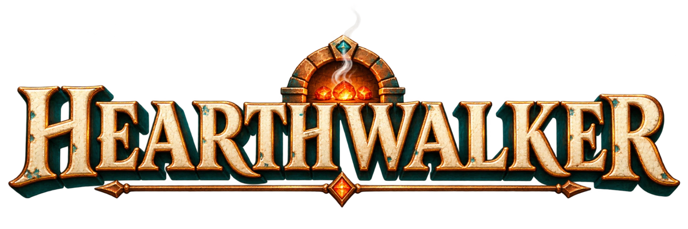

You don't carry the fire. You are the fire.
A portrait roguelite for iPhone · Coming November 2026 · Turkish store name: Hearthwalker: Son Ocak
Gameplay
You play a living hearth from an Anatolian tile workshop. Walk to gather embers and fuel, stop to raise your guard, then walk on and send a bellows wave through the horde. One hand, portrait screen, short journeys.
Each journey crosses one of twelve maps. Every map has its own creatures, ground and music, an Ancient creature mid-way, a hidden secret that grants a lasting gift, and a giant Carrier boss at the end.
The video is unedited footage captured from the game itself, with the game's own music and sound.
Facts
| Title | Hearthwalker (Turkish store name: Hearthwalker: Son Ocak) |
| Developer | Lumoza, an independent studio from Türkiye (Oğuzhan Alper Tosun) |
| Platform | iPhone (iOS 17 or later) |
| Release | November 2026, App Store worldwide |
| Genre | Roguelite survival, portrait, one-handed |
| Price | Free to download. Maps 1–6 are free; one in-app purchase ("The Road Beyond", US$4.99) opens maps 7–12. |
| Ads and data | No ads, no subscriptions, no loot boxes, no data collected. Plays offline. |
| Languages | English, Turkish, German, Spanish, French |
| Engine | Godot |
Features
- The bellows rhythm: walk, stop, walk. Gathering, guarding and the wave are one simple loop that deepens with mastery.
- 12 maps, 12 Carriers, 12 Ancients: from the Ash Forest to the Mother Hearth, each with its own rules and boss.
- 10 hearths: each plays differently, has a signature power and rises through five ranks in the workshop.
- 30 abilities and 27 supports: pick a power at every level, build your own run, unlock evolutions.
- Endless Road: after the maps, 99 Ember Degrees for a steeper climb, plus a Hearth of the Day challenge.
- A painted ceramic world: tile, glaze and copper, with original music and sound.
- Accessible: one-handed portrait play, reduced effects, larger text, battery saver.
Screenshots


Logo and icon


Contact
Press and editorial questions: see the support page. A TestFlight build is available on request.